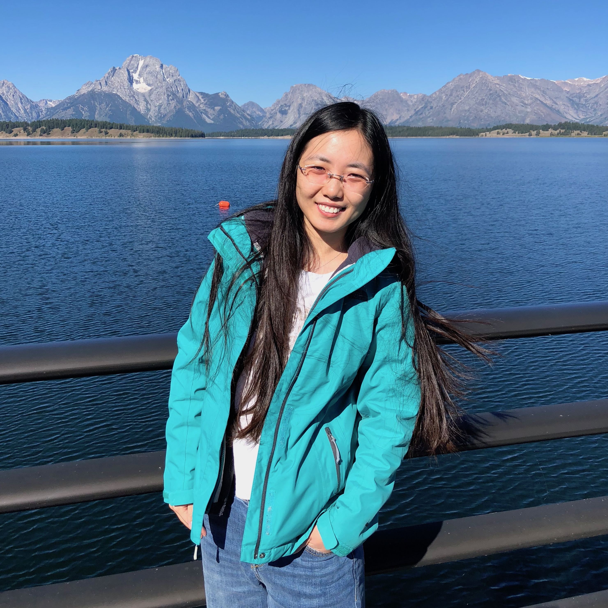

|  |
Jie LuFudan University Shanghai Cancer Center270 Dong'an Road, Xuhui District, Shanghai, China, 200032. Email: jielu823 [AT] gmail [DOT] com |
I am a resident doctor at Fudan University Shanghai Cancer Center. My research focuses on X-Rays, CT and MRI imaging principle, and brain functional MRI data analysis.